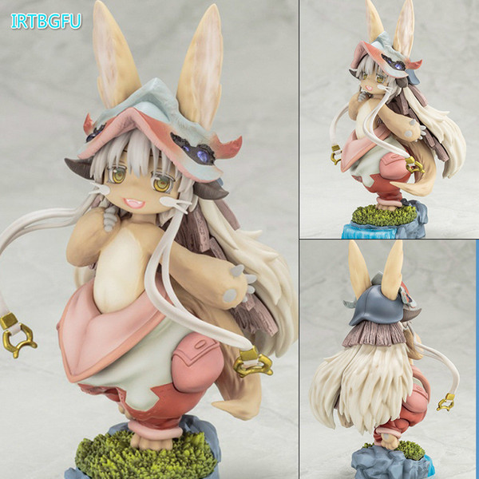

NANACHI
Nanachi (???, Nanachi) is a Narehate; a person who survived
the 6th layer's Curse of the Abyss, and was left deformed as
a result, but, unlike most other Narehate, still retained a
sound mind. Possessing vast knowledge of the Abyss - its
ecosystem, vegetation and even the use of the medicines,
Nanachi is currently a part of Riko's party, assisting her in
reaching the bottom of the Abyss. Their gender is ambiguous.

Appearance
Nanachi's appearance is very rabbit-like, save for a long sturdy tail, horizontally slanted pupils, carnivorous teeth and human-like hair; which is straight and white or cream in a short bobbed style, the sides of the bangs going down to the shoulders. In contrast, medium tan fur covers the rest of Nanachi, with light tan covering the insides of their ears and belly. They have a blush-like spot on each cheek; which has two thick whiskers protruding sideways. Other animal traits include a cat-like mouth with little fangs, yellow eyes with horizontal oval shaped pupils (similar to a goat's) and erect bunny ears. Their fingers are rather stubby.
Nanachi's attire consists solely of gray-green, baggy, drop-crotch harem pants, with dark-pink hip-bags on both sides, red pant legs, and a pink flap that is supposed to cover their usually naked torso.
Nanachi also wears a large, oddly-shaped headpiece the same colors as their pants. Attached to the sides of it are two curved horns that stick out horizontally. Hanging from the back there is a large layer of what appears to be shingles, covered by a layer of cream-colored animal pelts, and then another smaller layer of shingles. Strangely, Nanachi's side bangs seem to be much longer when the helmet is on, going down to their hips. They are tied at the end with metal rings. It is likely that these hair extensions are a part of the headpiece.
They typically walk upright, but sometimes will run on all fours if they are trying to move quickly.
Personality
Most of the time Nanachi is cool and reserved, keeping their distance emotionally and physically. Their attitude often borders on being sarcastic and even cynical, however behind this mask, Nanachi hides a kind and gentle soul, capable of deep compassion and selfless devotion. They are also quite bashful when complimented, seen in their reaction to being called "fluffy". They also express discomfort at being petted, especially by Reg.
History
Spoiler warning: The following section contains spoilers. Read with caution.
Dreadful Experimentation Flashback Arc
Nanachi was born in the far north region of Sereni, lost their family and home at a young age, and was taken to the Abyss by the infamous White Whistle Delver, Bondrewd, along with many other children.
Bondrewd was experimenting with ways to negate the curse of the Abyss, using children as his test subjects. While in the Abyss, Nanachi meets Mitty, another child taken by Bondrewd, and the two became close friends. Eventually, the number of children decreased, until finally Mitty was chosen to be experimented on and was led out by Bondrewd. Worried for Mitty, Nanachi followed, and soon found her trapped in one of two connected capsules.
Walking in at that moment, Bondrewd then decided to use the two as test subjects together because of their strong relationship, as previous experiments with humans and animals had not been effective. Nanachi was then forced into the other capsule, lowered to the 6th layer, and then quickly brought back up. The capsules were designed to transfer the Curse onto only one subject, Mitty, leaving the other potentially unaffected. Both survived and became Narehate as a result, but Nanachi retained their humanity and mind, as the majority of the Curse was transferred to Mitty.
Nanachi, in their new Narehate form, continued to work for Bondrewd at Ido Front, helping him to create cartridges. Unable to bear the horrible experimentation Mitty was subjected to any longer, Nanachi escaped Ido Front with Mitty on their back. The two traveled up to the 4th layer, where Nanachi found a spot away from the Abyss's vertical shaft where the force field was not present, and constructed a hideout there. Nanachi lived peacefully with Mitty in the 4th layer for some time. Sometimes Delvers would pass through the area, and fearing that word of them may get out, Nanachi was careful to not reveal themself, and instead would watch from a safe distance. Occasionally, when a Delver was wounded beyond help, Nanachi would take them in and experiment on them, hoping to find a way to kill Mitty. The bodies of these Delvers are buried in a graveyard behind their hut.